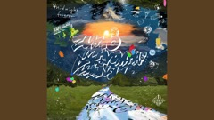
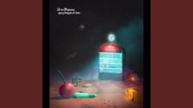

ZUTOMAYO · 3:52ヨルシカ · 4:18

ZUTOMAYO · 4:40 Ayase · 3:44
Ayase · 3:44
Decided · drag it out of the rail
You already drag rows to reorder. Keep going past the rail's edge and the row shrinks, greys and wears a small 'Let go to remove' label; let go and it is gone, with an Undo for five seconds. Drag it back in and nothing happens.
So it is never the only way: with a row focused, Delete does the same thing, and the row's right-click menu has 'Remove from queue'. Neither draws anything on screen.